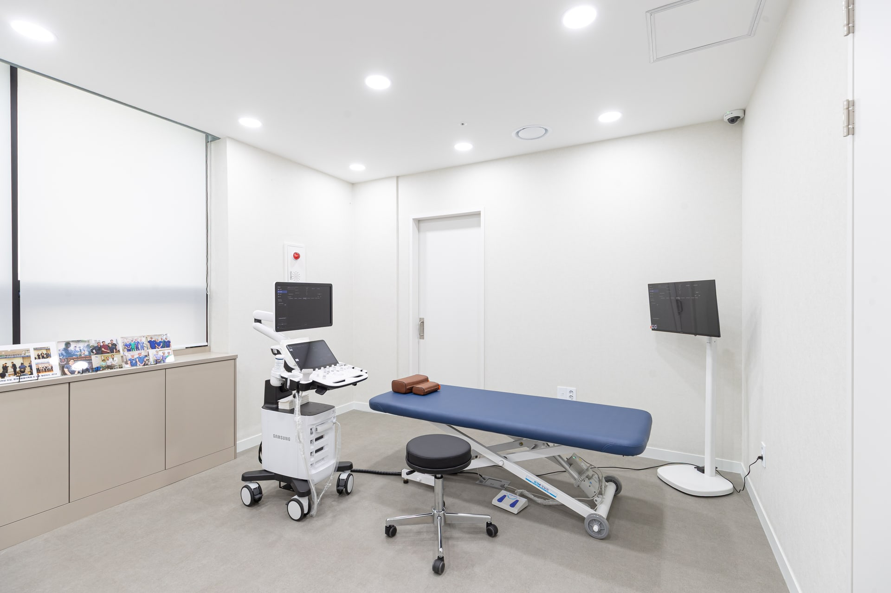
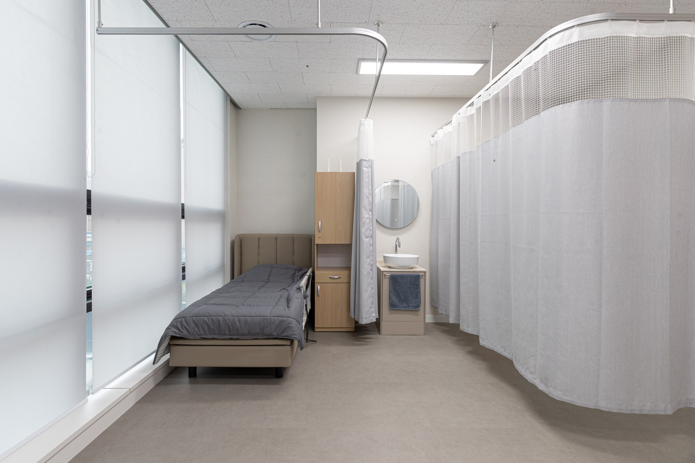
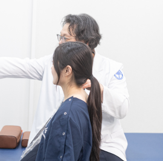

낮병동 운영
당일 입원 · 수술·시술 · 당일 퇴원
낮병동은 당일 입원하여 필요한 수술·시술을 받고,
안정과 경과 관찰을 거쳐 당일 퇴원하는 진료 방식입니다.
의료진이 환자 상태를 확인하며 치료부터 퇴원 후 관리 안내까지 함께합니다.
낮병동, 이런 분들께 안내드립니다
당일 수술·시술을 앞두고 있거나
치료 후 안정과 경과 관찰이 필요한 분들을 위한
당일 입원·퇴원 프로그램입니다.
-

당일 수술·시술을 위해
입원 준비가 필요한 분 -

수술·시술 후
안정과 경과 관찰이 필요한 분 -
03 의료진의 상태 확인 후
당일 퇴원을 계획하는 분 -

퇴원 후 주의사항과
관리 안내가 필요한 분
당일 치료와 퇴원까지 이어지는 낮병동
당일 입원 일정 안에서 수술·시술과 이후 안정, 경과 관찰을 진행합니다.
퇴원 전 의료진이 상태를 확인하고 퇴원 후 주의사항을 안내합니다.
- 당일 입원 후 수술·시술 진행
- 치료 후 안정과 경과 관찰
- 상태 확인 후 당일 퇴원 안내